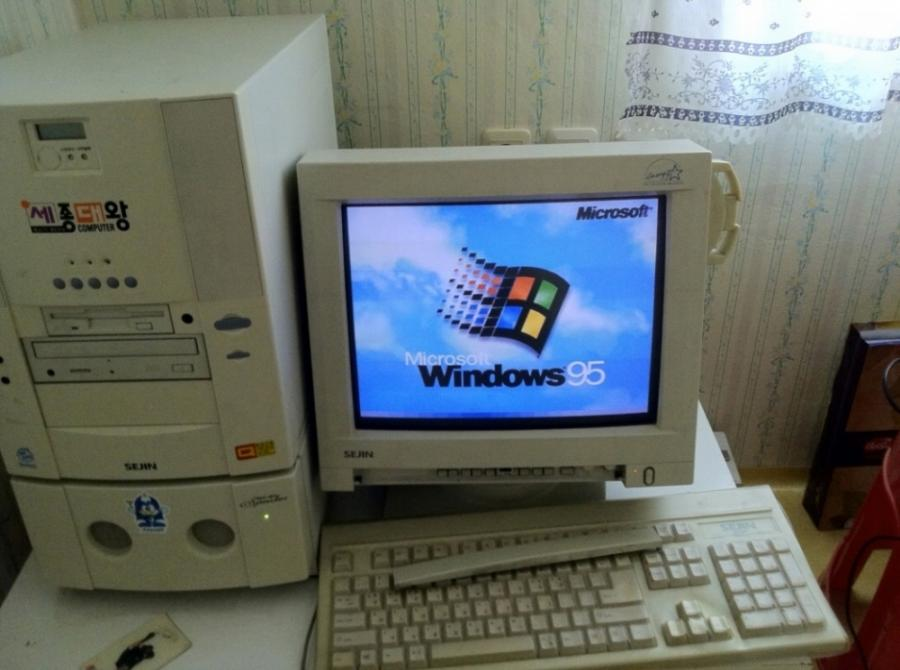

1
When I was 6, the Internet was essential to me.
2
I had to visit our school webpage every evening. All the homeworks was posted there. That experience made the Internet more familiar to me.
3
The online experience are related with offline. In the days when there were no smartphones, the experience of asking a friend what their homework was on days when I was out and couldn't access the computer was special.
4
Additionally, my childhood Internet experience has influenced me today. As with other Internet services, an ID was required to access the school webpage and view postings. That was the first online account I created when I was young, and I still use the ID I created then on various web pages.
5
And even as a college student, I use online web pages to check and submit school assignments. In modern times, access to the Internet has become easier, and the impact of the digital age on learning has become greater and more diverse.